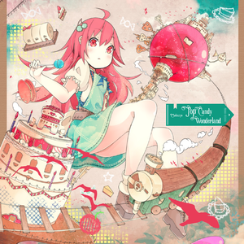

守望先锋:最后的堡垒
这是

00:00 / 00:00
Cosmology
我觉得这个短片的亮点可能在于,它拥有一个非常完整的故事发展脉络。从堡垒苏醒,探索森林,到了解自己的战争使命,最后被小⻦感化选择拥抱和平。5分半的时间内展示了多个三个场景。这样丰富的画面也给音乐留下了很好的发挥空间。 我最开始想要达成的目标也有很多方面最基本的是用音乐给不同的场景提供对应的情绪，也要在特定的时刻配合镜头语言推动感情，还要在场景切换的时间点配合画面产生强烈对比。这些目标其实给创作的过程增加了很多限制因素。